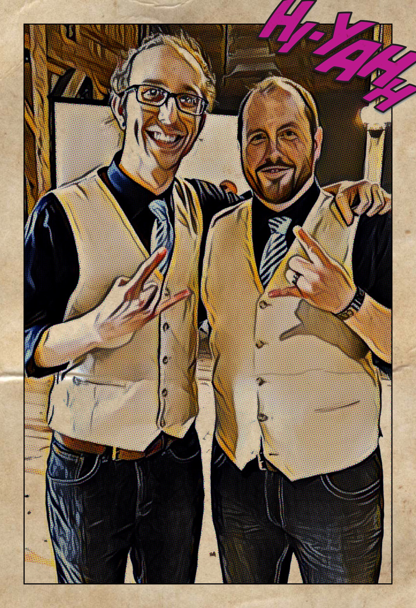

Noal is a quiet, mysterious person, though, once you get to know him, he does open up...somewhat. He has a variety of interests, including, video games, comic books and graphic novels, movies, music, and is extremely talented at painting miniatures. He is caring, intelligent, sensitive, and deep. He is an INTJ (Introversion, Intuition, Thinking, Judging), which is also known as "The Mastermind" or "Architect", one of the rarest of the Myers-Briggs psychological types. Noal works in IT, but is not the type of person that feels that your job defines you. He believes that a career is not as important as your passions and loved ones.
Above are War Hammer miniatures that Noal has painted. He is also interested in the books and video games. Some other video games that he is interested in include Knights of the Old Republic, Warcraft (all of them), Guild Wars, and games that have deep storylines.
Noal is part of a band called Ghosts of Ruin with his best friend Greg. They play heavy metal/death metal music.